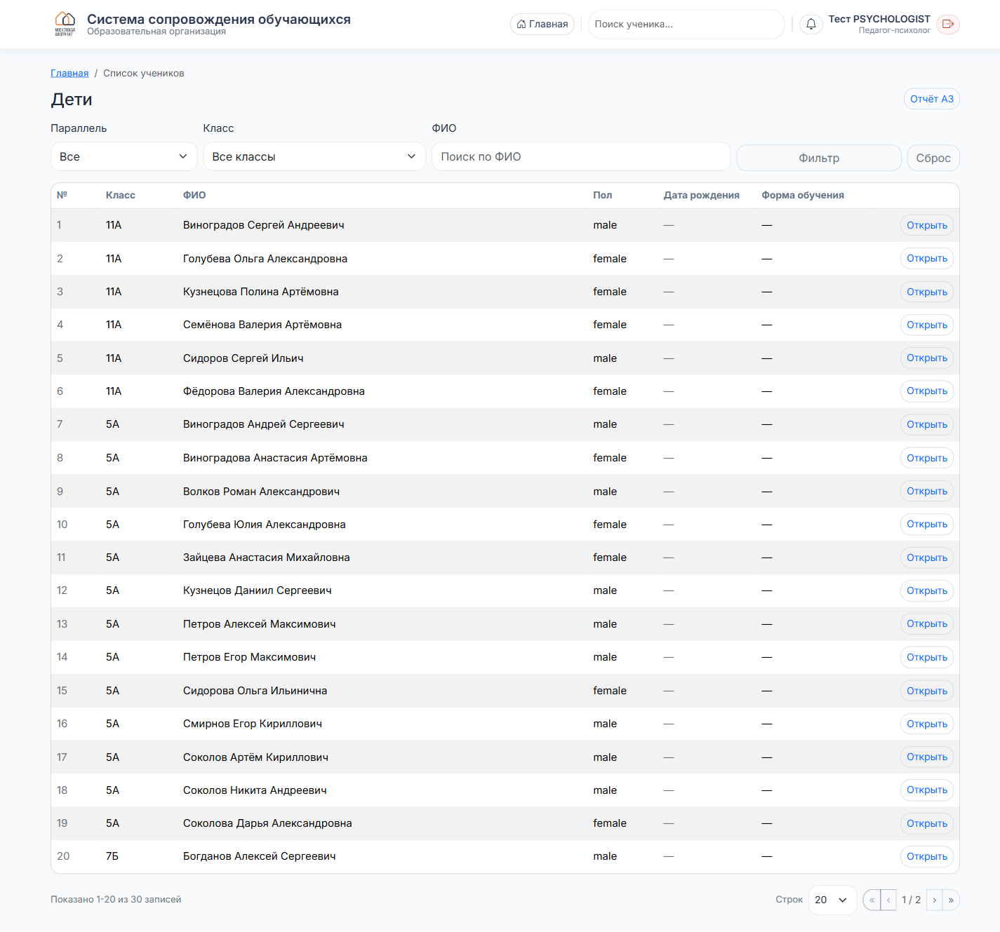
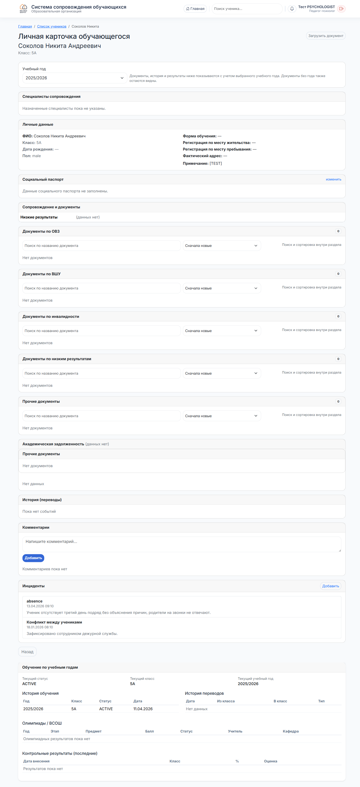
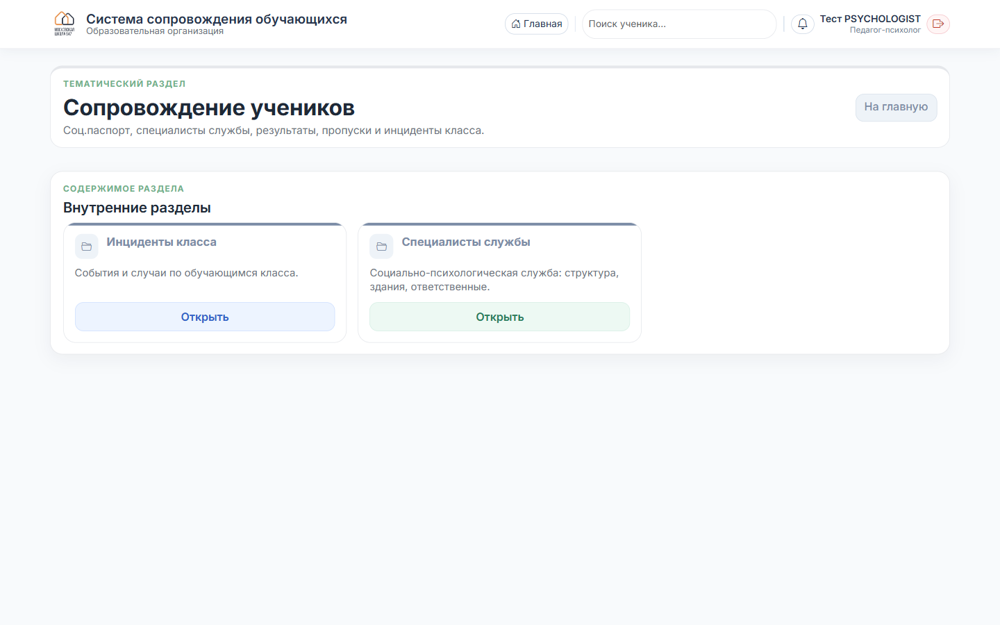

Педагог-психолог
Работа с учениками
Поиск ребёнка, личная карточка, соц. паспорт и инциденты класса.
1
Поиск и список
На главной — поле «Поиск ученика по школе». Вводите ФИО (целиком или часть) или номер класса — и «Найти». Откроется таблица всех детей школы с фильтрами.

Справа у каждой строки — кнопка «Открыть» ведёт в карточку ученика.
2
Личная карточка ученика
Вся информация о ребёнке в одном месте.

Что важно для психолога:
- Специалисты сопровождения — кто уже назначен.
- Социальный паспорт — семья, телефоны, статусы.
- Документы — по разделам: ОВЗ, ВШУ, инвалидность, низкие результаты.
- Комментарии — можно оставить свой комментарий, он останется в истории.
- Инциденты — все события по ребёнку. Кнопка «Добавить» — чтобы зарегистрировать новый.
- Обучение по годам — переводы, история классов.
Редактирование соц. паспорта — прерогатива классного руководителя. Психолог видит данные и может оставлять комментарии и добавлять инциденты.
3
«Сопровождение учеников»
На главной — тематический раздел «Сопровождение учеников». Внутри для психолога:

- Инциденты класса — события по конкретному классу.
- Специалисты службы — социально-психологическая служба: структура, здания, ответственные.
4
Обычный рабочий сценарий
- Утром — главная → счётчики «Инциденты за сегодня» → клик → дашборд → реестр.
- По каждому новому случаю: открыть инцидент → сменить статус на «В работе» → перейти в карточку ребёнка (ссылка на ФИО в строке) → оставить комментарий.
- После работы — вернуться в реестр, поменять статус на «Закрыт».